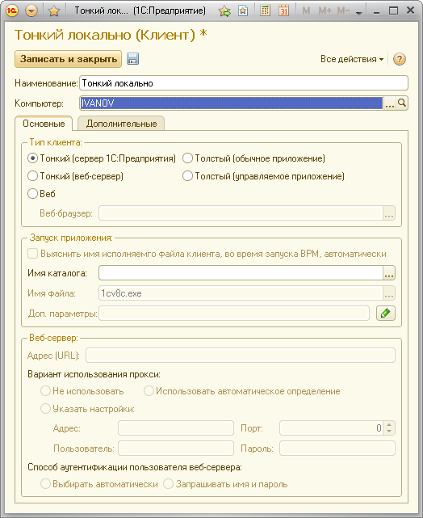

Для описания клиентов, в которых будут запускаться виртуальные пользователи, предназначен справочник «Клиенты». Элемент справочника «Клиенты» содержит полную информацию о том, какого клиента, с какими параметрами и на каком компьютере следует запустить.
Необходимо описать в данном справочнике все типы клиентов, которые вы предполагаете использовать для тестирования.
В простейшем случае для каждого клиента вам достаточно будет указать, на каком компьютере запускать клиента и какого типа (толстый, тонкий и т.п.).

Такая настройка будет нормально работать в том случае, если выбран один из клиентов 1С (не WEB-клиент) и запуск клиента будет осуществляться из того же каталога, откуда будет запускаться Агент на этом компьютере.
Если запуск клиента будет осуществляться из другого каталога, то необходимо указать имя каталога в поле «Имя каталога». Если будет использоваться WEB-клиент, то необходимо выбрать используемый браузер.
Кроме этого вы можете указать любые параметры запуска клиента.